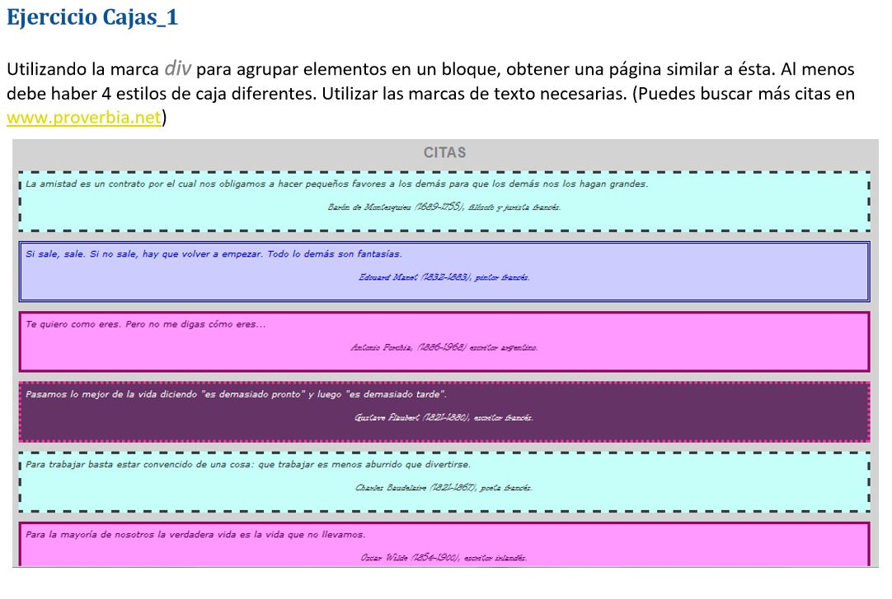

La amistad es un contrato por el cual nos obligamos a hacer pequeños favores a los demás para que los demás nos hagan grandes
Barón de Montesquieu (1689-1755), filósofo y jurísta francés
Si sale, sale. Si no sale, hay que volver a empezar. Todo lo demás son fantasías
Eduard Manet (1832-1883), pinor francés
Te quiero como eres. Pero no me digas cómo eres...
Antonio Forchia, (1886-1968) escritor argentino.
Pasamos lo mejor de la vida diciendo "es demasiado pronto" y luego "es demasiado tarde".
Gustave Flaubert (1821-1880), escritor francés
Para trabajar basta estar convencido de una cosa: trabajar es menos aburrido que divertirse
Claude Baudelaire (1821-1867), poeta francés
Para la mayoría de nosotros la verdadera vida es la vida que no llevamos.
Oscar Wilde (1854-1900), escritor irlandés